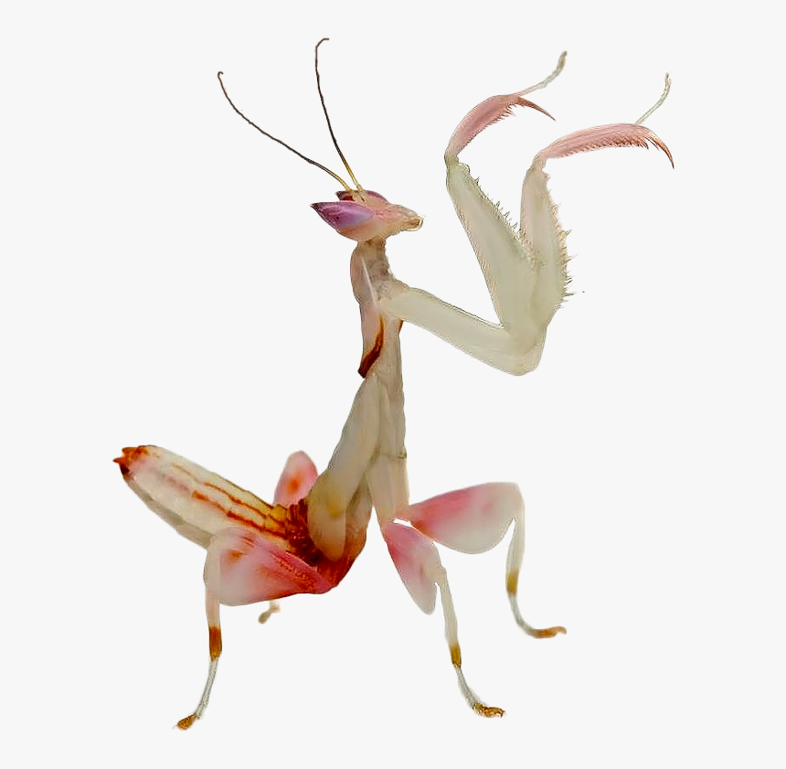

Klasifikasi
| Kerajaan |
: |
Animalia |
| Kelas |
: |
Insecta |
| Filum |
: |
Arthropoda |
| Subkelas |
: |
Pterygota |
| Infrakelas |
: |
Neoptera |
| Superordo |
: |
Dictyoptera |
| Ordo |
: |
Lepidoptera |
Belalang Sentadu atau bisa kita sebut juga dengan Mantis adalah termasuk serangga ordo Matodea. Banyak sebutan dalam bahasa lokal seperti congcorang, walang kadung, dan mentadak
Belalang sentadu adalah salah satu dari segelintir serangga yang dapat memutar kepalanya. Beberapa teks merujuk kepada belalang sentadu Eropa (Mantis religiosa) sebagai belalang sentadu yang paling umum di negara-negara di Eropa.
Seperti serangga yang lainnya, mantis juga bermetamorfosis. Mantis yang baru menetas dari telur bentuknya seperti udang kecil.
Mereka menerobos bagian bawah ooteka dan menggantung terbalik pada benang tipis. Setelah beberapa saat, selaput tipis ini terkoyak. Dari dalamnya muncul anak - anak mantis yang bentuknya sudah menyerupai mantis dewasa.
Metamorfosis mantis merupakan metamorfosis tidak sempurna karena bentuknya saat masih kecil dan dewasa hampir sama.
Fakta
Predator Kecil Ini yang Mampu Memangsa Serangga Hingga Burung
Kuat betul ya? Sampai - sampai bisa memangsa burung. Bagaimana bisa? Karena mantis memiliki kaki berduri, hewan ini dengan mudahnya mencengkeram dan mencegah musuh untuk melarikan diri.
Bahkan beberapa reptil seperti kadal dan katak serta burung kecil juga sering dijadikan buruan. Mantis akan memulai memangsa burung dengan menggerogoti tengkorak dan memakan bagian otaknya terlebih dahulu.
Mantis Betina akan Memangsa Sang Jantan Sesaat Setelah Melakukan Perkawinan
Biasanya yang namanya perkawinan itu sepasang suami istri bukan? Hidupnya biasanya bahagia bukan? Kok ini bisa jadi bahan santapan sang betina? Sadis betul ya, mantis betina akan memenggal kepala pejantan setelah melakukan senggama, lalu memakannya. Hal ini dilakukan untuk kecukupan asupan makanan demi kelangsungan hidup calon - calon telur hasil hubungan tersebut.
Tidak hanya kepalanya saja, tubuh pejantan juga perlahan akan dilahap sampai tidak bersisa. Katanya, pengorbanan pejantan ini dilakukan semata - mata untuk melestarikan populasinya.
Dapat Memutar Kepala Hingga 180 Derajat
Memutar kepala sampai 180 derajat? Tidak salah dengar? Tidak putus kepalanya? Kelebihan ini, memudahkan mantis untuk menengok ke seluruh isi bagian tanpa harus menggerakkan anggota tubuh lainnya. Sehingga mangsa dan pemangsa tidak bisa merasakan keharisan serangga satu ini.
Galeri
